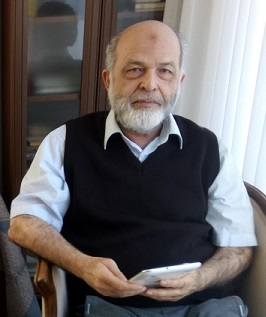

Mehmet Akif Eyler (Eğler)
BS: Mechanical Eng., Boğaziçi University, 1975
MS: Applied Sciences, Harvard University, 1976
PhD: Decision & Control, Harvard University, 1979
Advisor:
Prof Yu-Chi Ho
Areas of interest:
Information science
Discrete-event simulation
Programming languages
Current position:
Retired from Marmara University
e-mail: ma.eyler at gmail.com
github:
github.com/maeyler
blog:
eyler.blogspot.com
